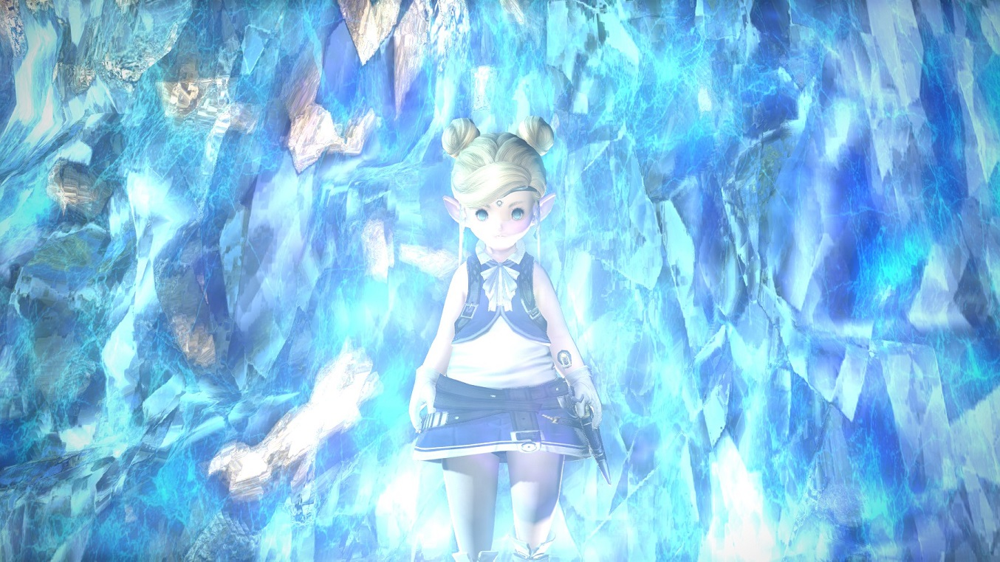
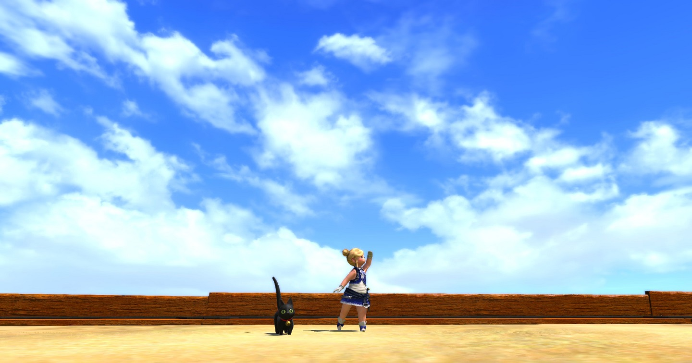

About Lil-Moonmoon
Lil-Moonmoon often finds herself in trouble. But she's never afraid! Okay, she's often afraid. But she knows it's important to face your fears and protect those in need! That's because she's a warrior of light, and the Crystal will always guide her.
A true crystal guardian
Lil-Moonmoon's Characteristics
- Chosen by the crystal
- Defender of those in need
- Actually a moon princess
Lil-Moonmoon's Friends
Lil-Moonmoon has made many allies on her journey. She's even met her one true love, Lil-Maskmask! Click on the links below to learn more about her allies:
